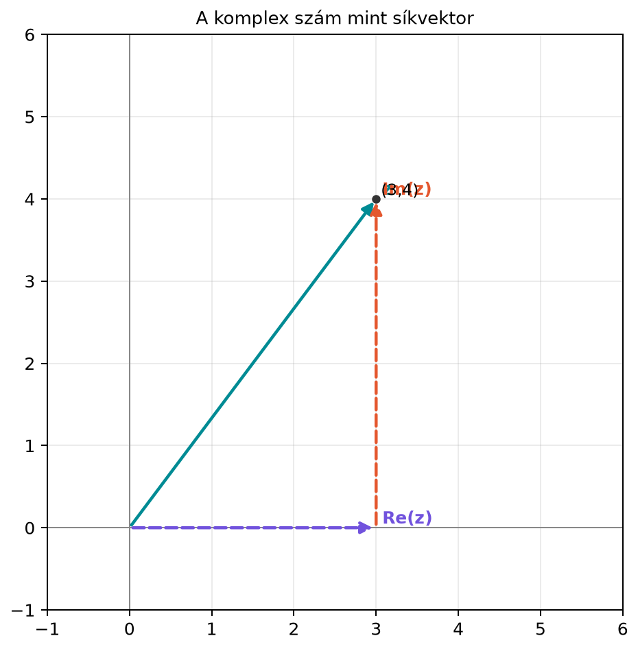

A 13.3. alfejezetben (Diagonalizálás és
mátrixhatványok) láttuk, hogy egy mátrix akkor diagonalizálható
kényelmesen, ha van elég sajátvektora. A forgatómátrix azonban furcsa
eset: például a
-os
síkbeli forgatás egyetlen nemnulla vektort sem hagy ugyanazon az
egyenesen, tehát valós sajátvektora egyáltalán nincs. Ez nem számolási
hiány, hanem geometriai tény. Ha a forgatást mégis a sajátértékek
nyelvén akarjuk leírni, ki kell lépnünk a valós számokból, és röviden be
kell vezetnünk a komplex számokat.
Ez a kilépés nemcsak elméleti játék. A modern transformer-modellek
egyik pozíciókódolási módszere, a RoPE, forgatásokkal dolgozik, és a
képletei pontosan a komplex számmal való szorzás nyelvén a
legtömörebbek. Ezért érdemes most megismerni azt a képet, amelyben a
komplex szorzás forgatást jelent.
13.4.2 Komplex szám mint síkbeli
pont
Egy komplex számot képzeljünk el síkvektornak: az
pontot ugyanúgy ábrázoljuk, mint a vektorokat, csak a vízszintes
tengelyt valós tengelynek, a függőlegest képzetes tengelynek nevezzük.
Az
a valós rész, a
a képzetes rész.

A komplex szám mint síkvektor - A z = 3 +
4i számot a (3, 4) vektor reprezentálja; |z| = 5, szöge theta kb.
53,13°. A szaggatott vonalak a valós és képzetes tengelyre vetületet
jelzik.
Definíció. Komplex számnak egy
rendezett valós számpárt nevezünk, amelyet
alakban írunk, ahol
a képzetes egység, és rá a
szabály teljesül. Az
szám a valós rész, a
a képzetes rész. A
abszolút értéke vagy modulusa a síkvektor hossza:
A
komplex szám szöge (argumentuma) az a
szög, amelyre
A
csak
egész többszöröséig egyértelmű; a főargumentumot
általában a
vagy a
intervallumban választjuk. A
esetben nincs értelmezett irányszög: a
poláris alak bármely
-ra
teljesül, de az irány nem egyértelmű. A poláris alakot ezért csak
-ra
használjuk, a nullát külön esetként kezeljük.
Például a
számnak
,
szöge pedig
.
13.4.3 A komplex szorzás forgat és
nyújt
Az algebrai szorzást a szokásos zárójelfelbontással és az
szabállyal végezzük:
Ennél sokkal beszédesebb a geometriai jelentés. Vegyük a
egységnyi hosszúságú komplex számot. A
-vel
való szorzás a síkvektort
szöggel forgatja el. Ha a szorzó abszolút értéke nem
,
akkor forgatás és egyidejű nyújtás történik.
Ezt a 2D forgatómátrixszal is összevethetjük. A
szám vektoralakja
.
A
komplex számmal való szorzás:
A kapott valós és képzetes rész éppen a forgatómátrix vektorra
gyakorolt hatásának két koordinátája:
Tehát a komplex
-val
való szorzás és az
mátrixszal való szorzás ugyanazt a lineáris leképezést írja le, csak más
nyelven.
13.4.4 Kidolgozott példa
Legyen
,
és szorozzuk meg
-vel,
azaz a
-os
egységforgatást reprezentáló komplex számmal:
Ugyanez mátrixosan a
forgatással:
Az eredmény valóban a
vektor, ahogy a komplex szorzásnál is kaptuk. Az eredeti és a kapott
vektor hossza is
:
A szög pedig
.
Ez jól mutatja: a szorzás a szögeket összeadja, a hosszt pedig nem
változtatja, ha a szorzó egységvektor-hosszú.
13.4.5 Az Euler-alak és a szögek
összeadása
A trigonometrikus azonosságokból következik, hogy
és ez az összefüggés természetesen illeszkedik az exponenciális
függvény szabályaihoz. A komplex exponenciális függvényt a következő,
itt bizonyítás nélkül elfogadott Euler-alakkal vezetjük be:
Ezzel minden nemnulla komplex szám felírható
alakban, ahol
és
a szög. Ha
és
,
akkor a szorzat
tehát a hosszak összeszorzódnak, a szögek pedig összeadódnak. Ez a
forgatás + nyújtás értelmezés pontos, tömör formája.
13.4.6 A forgatómátrix
sajátértékei
Most térjünk vissza a sajátérték-feladathoz. Keressük az
egyenlet megoldásait. A karakterisztikus polinom:
Ezt nullával egyenlővé téve:
Euler-alakban:
A sajátértékek tehát komplexek, kivéve a
és
eseteket, amikor
.
A hozzájuk tartozó sajátvektorok is komplexek: megmutatható, hogy
például a
-hoz
a
vektor, a
-hoz
pedig az
vektor tartozik. Ezek nem ábrázolhatók a valós síkon valós
nyilakként.
Állítás. Ha
és
,
akkor az
síkforgatásnak nincs valós sajátvektora.
Bizonyítás. Tegyük fel, hogy
valamely
valós vektorral és valós
számmal. A forgatómátrix ortogonális mátrix, ezért hossztartó:
.
Ebből
így
,
azaz
vagy
.
A
esetben
,
ami azt jelentené, hogy a forgatás egy nemnulla vektort helyben hagy. Ez
csak akkor igaz, ha
.
A
esetben
,
ami azt jelentené, hogy a forgatás az origóra tükrözi a vektort, ez
pedig
.
Mivel
,
ellentmondásra jutottunk, tehát valós sajátvektor nem létezik.
A komplex sajátértékek így nem geometriai irányokat jelölnek a valós
síkon, hanem azt fejezik ki, hogy a transzformáció „forgatás típusú”: a
sajátértékek fázisa éppen a forgatás szöge.
13.4.7 Számítógépes ellenőrzés
NumPyval
A NumPy a komplex számokat 1j képzetes egységgel kezeli.
Ellenőrizzük a
-os
forgatás sajátértékeit:
Várt kimenet (a sajátértékek sorrendje változhat):
[0.5+0.866j 0.5-0.866j]
(0.5+0.866j)
(0.5-0.866j)
A
és
értékekkel pontosan ezt vártuk.
13.4.8 Kapcsolat a gépi
tanulással
A forgatásalapú pozíciókódolásban, a RoPE-módszerben (Rotary Position
Embedding) nem a nyers tokenbeágyazást, hanem a figyelem
és
vetítéseit forgatjuk, fejenként; a
vetítést nem. A forgatott fejtér dimenziója páros, és a 0-tól indexelt
koordinátapárokat forgatjuk a pozíciótól függő szöggel. Egy
dimenziós fejtérnél a
és
indexű koordináták alkotnak egy párt
(),
és a párhoz tartozó alapszög
alakú, frekvenciafüggő érték, ahol
egy rögzített nagy alapszám (Su, Lu, Pan, Murtadha, Wen és Liu,
RoFormer: Enhanced Transformer with Rotary Position Embedding,
arXiv:2104.09864, 2021,
3.3. szakasz:
).
A művelet az
pozíciójú tokenre:
Komplex jelöléssel ugyanez tömören:
ahol
.
Ez a megfogalmazás mutatja, hogy a pozíciókódolás lényege a Q/K fejtér
páros dimenzióinak elforgatása, ami megőrzi a Q/K vetítések hosszát. A
módszer pontos levezetése a 22.4. alfejezetben (Pozíciókódolás: szinuszos kódolás és RoPE
forgatásokkal) következik. A módszer forrása Su et al.,
RoFormer: Enhanced Transformer with Rotary Position Embedding,
2021; az itteni előretekintés csak az alapötletre vonatkozik.
13.4.9 Tipikus hibák és
félreértések
„A forgatómátrix determinánsa 1, tehát kell valós
sajátvektora.” A determináns csak a sajátértékek szorzatát adja
meg, azok komplexek is lehetnek. A determináns
-ből
nem következik valós sajátvektor.
Az
elfelejtése komplex szorzásnál. Például
nem
,
hanem
.
A középső tag képzetes, az
-es
tag pedig valós.
A komplex sajátértéket valós irányként keresni. Az
sajátvektorai komplex vektorok, ezért a sajátvektorokat nem lehet a
valós rajzon látható nyílként megrajzolni. A komplex sajátérték a
forgatás szögét kódolja, nem egy tengelyirányt.
13.4.10 Feladatok
Fogalmi kérdés: Milyen
értékekre lesznek az
forgatómátrix sajátértékei valósak? Mi ezeknek a sajátértékeknek a
geometriai jelentése?
Kézi számolás: Írd fel az
mátrixot, és a karakterisztikus egyenletből számold ki a
sajátértékeit.
NumPy-feladat: Készítsd el a
forgatómátrixot, számold ki a sajátértékeit
np.linalg.eigvals segítségével, és hasonlítsd össze az
és
értékekkel, 4 tizedesre kerekítve.
Gondolkodtató feladat: A
komplex számot szorozd meg
-kal.
Mi lesz a szorzat? Miért tükrözi ez a forgatást? Magyarázd el, miért
előnyös a RoPE-ban az additív pozícióvektor helyett forgatást
használni.
13.4.11 Megoldások
A sajátértékek
alakúak. Akkor valósak, ha
,
azaz
vagy
.
A
eset az identitás: a sajátérték
,
minden vektor önmagába megy. A
eset az origóra tükrözés: a sajátérték
,
minden nemnulla vektor az ellentettjébe megy.
A mátrix:
A karakterisztikus polinom:
A
egyenlet megoldásai
és
.
Az
,
szöge
.
A
hossza
,
szöge
,
ezért a szorzat hossza
,
szöge
.
Algebrailag:
Az eredmény
,
tehát a képzetes tengelyre mutató vektor. A RoPE-ban azért hasznos a
forgatás az additív pozícióvektor helyett, mert a forgatás megőrzi a Q/K
vetítések hosszát, és a belső szorzatban relatív pozíciófüggést hoz
létre, ami segíti a figyelemmechanizmust.
13.4.12 Rövid összefoglaló
A komplex számok síkvektorokként ábrázolhatók, és a komplex szorzás
forgatás + nyújtás műveletként értelmezhető. A
számmal való szorzás az
forgatómátrixszal azonos lineáris leképezést ad. A forgatómátrix
sajátértékei
,
és a
esetben valós sajátvektor nincs. Ez a nyelv teszi tömörré a
RoPE-pozíciókódolást, amelyben a Q/K fejtér páros dimenzióit forgatjuk
pozíciófüggő szöggel.
A legfontosabb képletek:
13.4.13 Források
A lineáris algebrai tartalom klasszikus, a hivatkozott tankönyvi
forrásokban (Strang: Introduction to Linear Algebra;
Deisenroth–Faisal–Ong: Mathematics for Machine Learning)
standard módon szerepel. A RoPE-módszer forrása Su, Lu, Pan, Murtadha,
Wen és Liu, RoFormer: Enhanced Transformer with Rotary Position
Embedding, arXiv:2104.09864 (2021),
3.3. szakasz; az itteni előretekintés a cikk alapötletére vonatkozik, a
részletes levezetés a 22.4. alfejezetben (Pozíciókódolás: szinuszos kódolás és RoPE
forgatásokkal) jelenik meg.